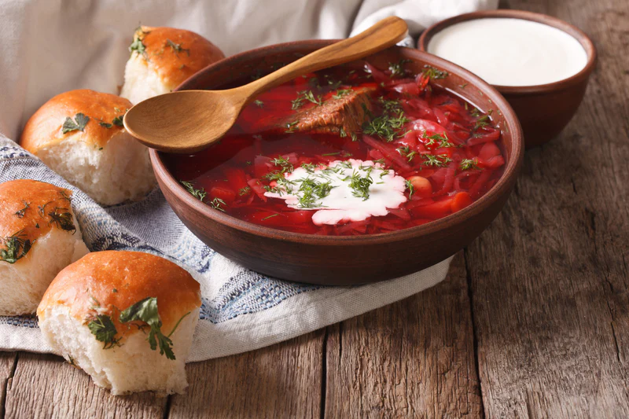

Classic Borscht Recipe

Description
Borshct is a sour soup, made with meat stock, vegetables and seasonings, common in Eastern Europe and Northern Asias
Ingredients
For Borscht:
- 3 medium beets, peeled and grated
- 4 Tbsp olive oil, divided
- Tomato products
- 8 cups chicken broth , + 2 cups water
- 3 medium yukon potatoes, peeled and sliced into bite-sized pieces
- 2 carrots, peeled and thinly sliced
For Zazharka (Mirepoix):
- 2 celery ribs, trimmed and finely chopped
- 1 small red bell pepper, finely chopped, optional
- 1 medium onion, finely chopped
- 4 Tbsp ketchup or 3 Tbsp tomato sauce
Additional Flavorings:
- 1 can white cannelini beans with their juice
- 2 bay leaves
- 2-3 Tbsp white vinegar, or to taste
- 1 tsp sea salt, or to taste
- 1/4 tsp black pepper, freshly ground
- 1 large garlic clove, pressed
- 3 Tbsp chopped dill
Steps
- Peel, grate and/or slice all vegetables (keeping sliced potatoes in cold water to prevent browning until ready to use then drain).
- Heat a large soup pot (5 1/2 Qt or larger) over medium/high heat and add 2 Tbsp olive oil. Add grated beets and sauté 10 minutes, stirring occasionally until beets are softened.
- Add 8 cups broth and 2 cups water. Add sliced potatoes and sliced carrots then cook for 10-15 minutes or until easily pierced with a fork.
- While potatoes are cooking, place a large skillet over medium/high heat and add 2 Tbsp oil. Add chopped onion, celery and bell pepper. Saute stirring occasionally until softened and lightly golden (7-8 minutes). Add 4 Tbsp Ketchup and stir fry 30 seconds then transfer to the soup pot to continue cooking with the potatoes.
- When potatoes and carrots reach desired softness, add 1 can of beans with their juice, 2 bay leaves, 2-3 Tbsp white vinegar, 1 tsp salt, 1/4 tsp black pepper, 1 pressed garlic clove, and 3 Tbsp chopped dill. Simmer for an additional 2-3 minutes and add more salt and vinegar to taste.
Other recipes